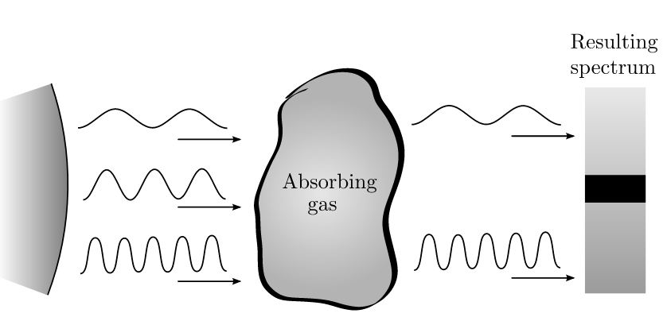
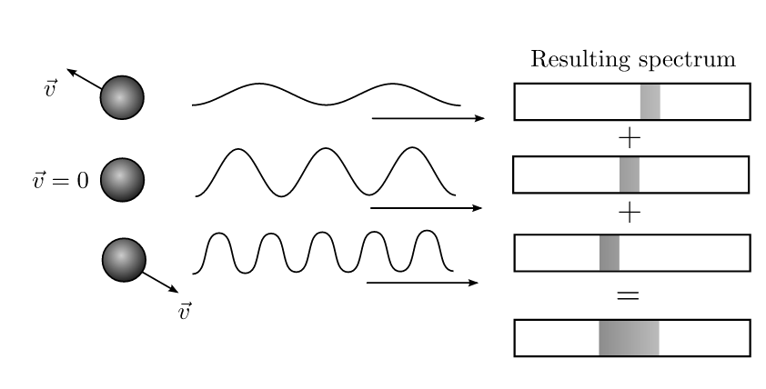
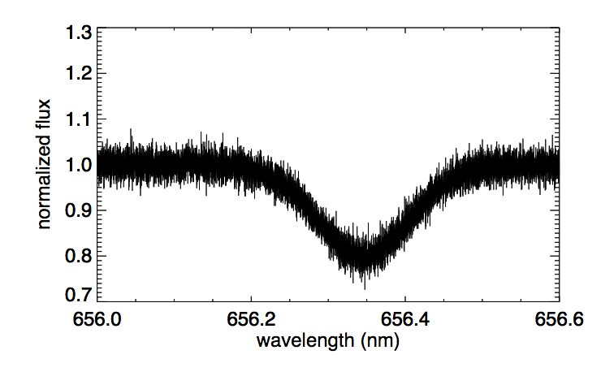
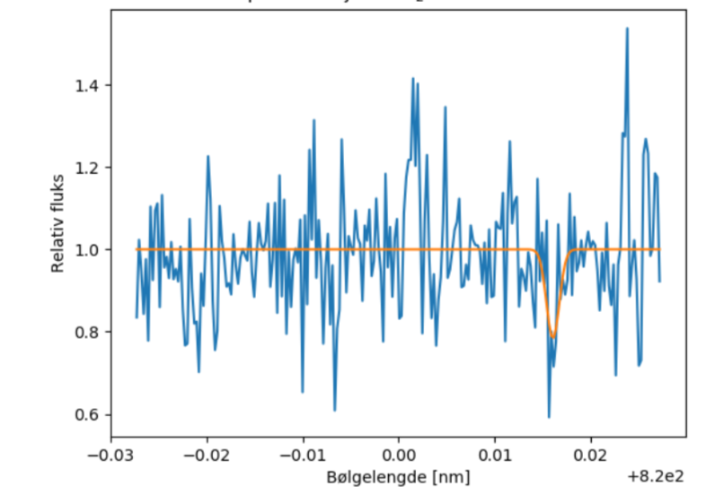

Du må bruke presentasjonsmodus/fullskjermsvisning for å lese denne, men du skal ikke bruke frem/tilbake-knappene, KUN knappene som dukker opp på sliden for å ta deg videre! Ofte må du laste filen ned til maskinen din og åpne den der for å få til dette. Merk at noen knapper vil åpne nettskjema, videoer eller andre ressurser i internettbrowseren din. Når du gjør det riktig, skal du kun se en side av gangen, og når du trykker på knappene som dukker opp på skjermen så skal disse ta deg frem/tilbake i dokumentet. Du vil miste mye læringsutbytte hvis du ser flere slides av gangen. Får du det ikke til, spør foreleser/gruppelærer!
Dette er en erstatning for forelesningen i emnet. Har du gått skikkelig gjennom disse interaktive forelesningsnotatene så trenger du ikke å lese de fulle forelesningsnotatene (med unntak av oppgavene bak). All informasjonen du trenger, får du her. Du kommer til å få mange grublespørsmål og diskusjonsoppgaver, det er meningen at disse skal gjøres i grupper av minst 2, maks 4 studenter. Det er defor sterkt anbefalt at dere sitter sammen i grupper når dere går gjennom disse interaktive forelesningsnotatene, du vil få betydelig mer utbytte av dem på den måten. En god ide kan være å bli enige om å treffes til den faste forelesningstiden og bruke forelesningslokalet som kommer til å være resevert til dette. Hvis du har kommentarer ris/ros til disse forelesningsnotatene eller til emnet, trykk på 🙂 🙁 knappen som du finner på alle sider.
Forrige side
Velkommen til andre forelesning av del 1D! Vi skal Vi skal gå rett over på spektrallinjer og undersøke hvordan disse oppstår, hvilken informasjon de bærer, hvordan vi kan modellere dem og analysere dem. Vi skal igjen innom minste kvadraters metode og χ2 i innleveringsoppgavene. Er du klar? Neste side
Elektronene i atomene har kvantiserte energinivåer (representert som baner i animasjonen). Hvis en lyspartikkel (foton) med energi som tilsvarer nøyaktig forskjellen i to energinivåer passerer atomet, så kan elektronet absorpere dette fotonet, og hoppe et energinivå opp.
Elektronene prøver å ha et lavest mulig energinivå slik at de etter kort tid faller ned igjen og sender dermed ut et foton som tilsvarer forskjellen i energi mellom energinivåene.
Du husker kanskje at energien til et foton er gitt ved $$E=h\nu=\frac{hc}{\lambda}$$ ???
Denne er så viktig at bør du huske den. Lys som har en bølgelengde λ slik at energien E tilsvarer overgangen mellom to energinivåer i et atom blir absorbert. Tilsvarende, når elektronet faller ned igjen, så sender det ut lys med bølgelengde λ som da tilsvarer denne energien E. Neste side
Forrige side🙂 🙁
Spektrallinjer
Her ser vi dannelsen av en absorpsjonsline i atmosfæren til en stjerne (atmosfæren til stjerna, merket som ’Absorbing gas’ er her skjematisk tegnet separat fra stjerna):  Gassen i atmosfæren inneholder atomer eller molekyler med energinivå som tilsvarer bølgelengden som vi ser blir absorbert. Dermed ser vi at disse bølgelengdene ikke kommer frem til observatøren med spektroskop på høyre side. Dermed blir det en mørk linje i spektret. Men vi lærte på forrige side at elektronene faller ned igjen og dermed sender ut fotonet med akkurat denne bølgelengden på nytt. Hvorfor blir det likevel en mørk linje i spektret?
Forrige side🙂 🙁Spektrallinjer Et lite hint: Når elektronet sender ut fotonet igjen, blir det da alltid sendt mot observatøren? Hvor blir det sendt?Neste side
Forrige side🙂 🙁Spektrallinjer
Årsaken er at elektronet ikke aner noe om hvor fotonet kom fra, det aner ikke engang at det ble løftet opp i et nytt energinivå pga. av et foton (et elektron aner strengt tatt ingenting, all forskning så langt peker på at elektroner ikke er bevisst...). Dermed blir dette fotonet sendt ut i en helt tilfeldig retning. Noen slike fotoner vil tilfeldigvis faktisk gå i retning av observatøren men langt mindre lys på denne bølgelengden vil komme frem, siden de aller fleste blir spredd i alle andre retninger. Neste side
Et hint: Kan du tenke deg en annen prosess som gjør at elektronet hopper opp? Tjaaaa, kanskje det?
Hvis gassen har høy temperatur, vil partiklene skumpe borti hverandre og overføre energi slik at elektronet kan hoppe opp. Men som før vil det falle ned igjen, og sende ut ekstra mange fotoner på akkurat bølgelgenden som tilsvarer denne energiforskjellen. Neste side
Forrige side🙂 🙁Bredden til spektrallinjer
Tilbake til spørsmålet fra skjemaet: vi bruker illustrasjonen av absorpsjonsline. Anta at atmosfæren (den absorberende gassen) er i ro i forhold til stjerna og observatøren (spektrografen til høyre): Vi antar at gasspartiklene kun absorberer på bølgelengde λ0. Vi vet at gasspartiklene har tilfeldige hastigheter i tilfeldige retninger fra Maxwell-Boltzmann-fordelingen. Et atom i den absorberende gassen som har hastighet mot stjerna absorberer et foton. Hvordan vil en obsevatør på dette atomet oppleve stjerna? Stjerna står i roStjerna beveger seg mot atometStjerna beveger seg fra atomet
Et lite hint for å hjelpe til: hvis du kjører bil mot en bygning, i ditt referansesystem, beveger bygningen seg mot deg, fra deg, eller er den i ro? Ahhh, nå ser jeg det!
Det ble feil! Husker du Doppler-effekten? Hva skjer hvis en lyskilde beveger seg mot deg? Ahhh, nå ser jeg det!
Forrige side🙂 🙁
Bredden til spektrallinjer
Korrekt: Når atomet beveger seg mot stjerna, så vil, i atomets referansesystem, stjerna bevege seg mot atomet. Husk Doppler effekten: Hvis en lyskilde beveger seg mot deg, vil du observere en kortere bølgelengde! Lysbølgene som atomet observerer til å ha en bølgelengde λ0 har dermed egentlig en lengre bølgelengde sett fra stjerna (observatørens) referansesystem. Atomet absorberer dermed en bølgelengde som er lengre enn λ0 sett fra observatøren! Ser du dermed også at de atomene som beveger seg med hastighet bort fra stjerna vil absorbere en bølgelengde som er kortere enn λ0? Og de atomene som står omtrent i ro i forhold til stjerna vil absorbere omtrent på bølgelengden λ0? På grunn av gasspartiklenes tilfeldig bevegelse inne i gassen, så vil vi, selv om gassen som helhelt står i ro i forhold til stjerna,få absorpsjon både på λ0, men også på andre bølgelengder i nærheten av λ0.. Dette som et resultat av Dopplereffekten fra atomenes tilfeldige bevegelser inne i gassen. Neste side
Forrige side🙂 🙁Bredden til spektrallinjer
Vi får dermed en bredde på linja, og ikke en syltynn spektrallinje på nøyaktig bølgelengden λ0:  Men hvor bred blir linja og hva avgjør det? Og hva blir formen på linja?Kan du allerede tenke deg hvilken egenskap ved gassen som avgjør hvor bred linja blir??Neste side
Forrige side🙂 🙁Formen til spektrallinjer
Før vi svarer på spørsmålet, la oss undersøke litt. Hvis vi setter en x-akse som går fra observatøren, gjennom gassen og mot stjerna, er du da enig i at hastighetskomponenten i gassen som avgjør Doppler-effekten er x-komponenten av partikkelhastigheten? Altså vx til partiklene avgjør hvilken bølgelengde λ som blir absorbert?Ja,helt enig!Nja, tror det...
Forrige side🙂 🙁Formen til spektrallinjer Det ble galt! Husker du Dopplerformelen? Den må du kunne i dette kurset. Gå tilbake til del 1C og forsikre deg om at du virkelig kan dette med Doppler effekten! Du må også ha helt klart for deg når bølgelgenden blir kortere og når den blir lengre! Du fikk oppgitt at hastigheten er negativ, hvilken retning går den da i forhold til stjerna? Blir bølgelengden lengre eller kortere? Gå tilbake og prøv igjen! Hvis du ikke får det til, kontakt foreleser nå!!!!
Forrige side🙂 🙁Formen til spektrallinjer
Flott! Du har forstått det!Hvis du likevel er usikker, kontakt foreleser nå!!!! Spørsmålet nå blir da hvor mange gasspartikler har en gitt hastighet vx og som dermed gir en gitt Dopplereffekt $\frac{v_x}{c}$?? Vel, vi vet vel allerede svaret: Maxwell-Boltzmannfordelingen for hastighetskomponenter! Husker du hvordan den ser ut?
Forrige side🙂 🙁Formen til spektrallinjer Det ble ikke helt riktig! Kan du tegne Maxwell-Boltzmann-fordelingen for vx? Hvilken hastighet vx har de fleste partiklene i gassen? Hvilken Dopplereffekt gir denne bølgelengden? Hva blir dermed bølgelengden som får sterkest absorpsjon? Gå tilbake og prøv igjen!
Forrige side🙂 🙁Formen til spektrallinjer
Det er helt riktig! Maxwell-Boltzmann-fordelingen for vx så slik ut:
Ser du at de aller fleste partiklene har omkring 0 hastighet i x-retning? Dermed får du ingen Dopplereffekt fra de fleste partiklene. Dermed forblir absorpsjonen på bølgelgenden omkring λ0 for det meste av strålingen. Neste side
Forrige side🙂 🙁Formen til spektrallinjer Her ser vi hvordan partiklene med forskjellige hastigheter bidrar til absorpsjonslina:
Øverst har vi hastighetsfordelingen for vx, nederst har vi fluksen F(λ) som funksjon av bølgelengden. Vi har altså flest partikler med vx omkring 0 som gir bidrag til absorpsjonen ved λ0. Siden det er flest partikler som absorberer på denne bølgelengden blir det også størst absorpsjon der. For hastigheter |vx| > 0 ser vi at vi har færre partikler, dermed også svakere absorpsjon. Helt på enden av fordelingen hvor det er nesten 0 partikler får vi da heller nesten ingen absorpsjon. Neste side
Ser du at hvor sterk absorpsjon du får er proporsjonalt med antall partikler som har den gitte hastigheten? Hvis dobbelt så mange partikler har en gitt hastighet så vil også dobbelt så mange fotoner bli absorbert på den tilsvarende bølgelengden. Kan du dermed se hvordan formen på spektrallinja vil være? Hva slags form vil F(λ) ha nær spektrallinja? Tenk deg om to ganger før du går videre. Neste side
Fordelingen av hastigheter er Gaussisk, altså er fordelingen av antall partikler som absorberer som funksjon av hastighet og dermed bølgelengde, Gaussisk. Dermed må også antall fotoner som blir absorbert og dermed fallet i fluksen også være Gaussisk. Toppen i Maxwell-Boltzmann er på 0 hastighet, dermed blir toppen eller bunnen i fluksen også på λ0, dvs. ingen Doppler-effekt, slik som vi utledet for et par sider tilbake. Men hva med standardavviket σ? Tenk deg godt om og se om du kan se hva det må bli! Neste side
Standardavvik for hastighet er $\sigma_v=\sqrt{\frac{kT}{m}}$. De partiklene som har vx lik dette standardavviket vil gi opphav til en Dopplereffekt $\Delta\lambda=\lambda_0\frac{v_x}{c}$ som insatt for vx gir $\Delta\lambda=\frac{\lambda_0}{c}\sqrt{\frac{kT}{m}}$ og som dermed tilsvarer standardavviket for spektrallinja og dermed også er et mål på bredden til linja. Dermed ser vi at vi fra bredden av spektrallinja har et direkte mål på temperaturen til gassen, gitt at du kjenner massen m til atomene/molekylene. Neste side
Fluksen F(λ) utenfor selve spektrallinja kaller vi kontinumsfluksen. Totalfluks i selve spektrallinja er altså kontimumsfluksen pluss formen på spektrallinja. Vi skal i det følgende anta at vi normaliserer fluksen F(λ) slik at kontnumsfluksen er 1. Dermed blir F(λ) = 1 utenfor spektrallinja, på begge sider. Minimumsfluksen (hvis vi antar absorpsjonslinje), kaller vi Fmin. Bølgelengden i sentrum kaller vi λ0 og standardavviket σ. Kan du skrive et uttrykk for F(λ) uttrykt kun ved Fmin, λ0, σ og selvfølgelig også λ? Tenk deg godt om og skriv ned et forslag før du blar om. Neste side
Fikk du noe slikt? $$F(\lambda) = 1+(F_\mathrm{min}-1)e^{-\frac{(\lambda-\lambda_0)^2}{2\sigma^2}}$$ Her ser vi at hvis eksponenten er 1 (altså λ = λ0) så er F(λ) = Fmin, mens når vi er langt fra sentrum av linja og eksponenten dermed går mot 0 så får vi 1 (kontinumsfluksen). Og formen er Gaussisk med standardavvik σ. Hvis du ikke får dette til å stemme, kontakt foreleser/gruppelærer!. Neste side
Forrige side🙂 🙁Observasjoner av spektrallinjer Og dermed er vi fremme ved den ene innleveringoppgaven 1D.6. Da får du et observert spektrum med støy:

Her skal du bruke minste kvadraters metode for å finne et estimat av den glatte underliggende kurven og dermed av temperaturen til gassen. Du kjenner nå modellen for F(λ) og skal dermed tilpasse de ukjente parameterene λ0, σ og Fmin på akkurat samme måte som i 1C. Egentlig kjenner du jo λ0 som er senteret i spektrallinjen, men hvis stjerna har en hastighet i forhold til observatøren så får vi også en Dopplereffekt pga. egenhastigheten (peculiar velocity, se del 1C) og dermed endres senterlinja λ0. Denne endringen i bølgelengde kan du bruke til å finne egenhastigheten til stjerna. Neste side
Forrige side🙂 🙁Observasjoner av spektrallinjer Et lite tips på veien: Når du skal finne intervaller for σ ved avlesning så er det litt vanskelig da σ ikke er en veldig intuitiv størrelse. Da er det mye lettere om du går veien via FWHM. Kikk tilbake på del 1A hvis du ikke husker hva FWHM var. Spesielt viktig her er sammenhengen mellom σ og FWHM: $$\mathrm{FWHM}=2\sigma\sqrt{2\ln{2}}$$
Bortsett fra det så er dette veldig likt det som du gjorde i 1C. Bruk tipsene der for å finne bugs i koden. Merk forbindelsen til del 1C i denne oppgaven: når du finner den forflyttede λ0 så finner du hastigheten til stjerna på det gitte tidspunktet. Nå du så gjentar dette for observasjoner tatt på flere forskjellige tidspunkt så får du til slutt hastighetskurven til stjerna som du brukte i 1C til å finne ut om den har planeter og hvilke egenskaper disse planetene har.Neste side
Forrige side🙂 🙁Observasjoner av spektrallinjer I oppgave 1D7 som også er en innleveringsoppgave og som er spesielt viktig for prosjektstudentene, skal dere lete etter spektrallinjer i spektret til atomsfæren på planeten deres. Et spekter kan f.eks. se slik ut:

I denne oppgaven vil standardavviket til støyen variere som funksjon av bølgelengde. Du skal dermed gjøre χ2 tilpasning istedenfor minste kvadrat (se igjen 1C for repetisjon!). I figuren ser du et eksempel på en tilpasset spektrallinje. Spørsmålet her blir hvordan du kan være sikker på om det faktisk er en spektrallinje her i det hele tatt?Neste side
Ser du at støyen har utslag som er like kraftige som spektrallinja som har blitt funnet. Det er viktig å merke seg at minste kvadraters metode og χ2 metoden gjør en best mulig tilpasning selv om det i dette tilfellet godt kan være at det overhodet ikke er noen spektrallinje her! Da kan det være at den har prøvd å finne en Gaussisk grop inne i støy-fluktuasjonene! Tenk gjennom hva du kan gjøre for å luke ut slike tilfeller (du vil aldri kunne luke disse ut med 100% sikkerhet!). Hvilken strategi vil du bruke for å avgjøre om dette er en linje eller ikke? Neste side
Forrige side🙂 🙁Størrelseklasser
Da har vi kommet til siste tema i del 1D. Dette dreier seg om en ny måleenhet for fluks og luminositet som brukes hyppig i astrofysikken og da spesielt blant de som gjør observasjoner med teleskop. Hvis du ikke har full kontroll på disse to begrepene, gå tilbake og repeter, evt. spør foreleser/gruppelærer før du går videre! Neste side
(bilde fra NASA/JPL)
I bildet ser du massevis av objekter med forskjellig fluks. Noen objekter er veldig lysende med stor fluks, noen er svake og såvidt synlige og dermed med lav mottatt fluks. Merk at vi her snakker om mottatt fluks, fluksen tatt ved observatøren. Fluksen rett ved objektet, den utsendte fluksen, er en helt annen. Dobbeltsjekk at du forstår dette og at du vet hvordan du kan regne fra utsendt fluks til motsatt fluks og tilbake igjen. Neste side
(bilde fra NASA/JPL)
Den greske astronomen Hipparkhos (omkring 150 år før vår tidsregning) klassifiserte stjerner på nattehimmelen i 6 såkalte størrelseklasser (magnitudes). De aller sterkeste stjernene på himmelen var i størrelseklasse 1, mens de man såvidt kunne skimte med øyet var i størrelseklasse 6. Kan du tenke deg hva man idag bruker til å klassifisere stjernenes ’styrke’ på himmelen? Neste side
(bilde fra NASA/JPL)
Jepp, man bruker faktisk enda Hipparkhos sin skala, men man har gjort det litt mer vitenskapelig/matematisk. Hvor sterk vi ser en stjerne på himmelen er jo bare et mål på den mottatte fluksen. Hvis fluksen (lysenergi vi mottar per areal og tid) er stor, så ser stjerna sterk ut og motsatt. Øyet registrerer lysstyrke logaritmisk i fluks. Dermed har man definert det slik at et objekt som har 100 ganger større fluks en et annet objekt har en forskjell i størrelseklasse på 5. Dette stemmer ganske godt med Hipparkhos’ opprinnelige klassifisering.
(bilde fra NASA/JPL)
Så, da har vi det vi trenger. Anta at vi har to objekter, objekt 1 har fluks F1 og størrelseklasser m1. Tilsvarende har objekt 2 fluks F2 og størrelseklasse m2. Vi vet at hvis F2 = F2 så er m1 = m2. Vi har også definert at hvis F1 = 100F2 så er m2 − m1 = 5 (MERK: Størrelseklassen blir mindre når fluksen blir større, lav størrelseklasse betydde jo at stjerna var sterk!.) Kan du finne en generell sammenheng mellom F1, F2, m1 og m2? Hint: her må det vel noe logaritmisk til (10-logaritme). Ikke gå videre før du har et forslag.
Forrige side🙂 🙁Størrelseklasser Har du sjekket skikkelig? Er det virkelig slik at når m1 = m2 så blir F1 = F2 for dette uttrykket? Er det også slik at når F1 = 100F2 så er m2 − m1 = 5? Nei, begge er ikke oppfylt i dette uttrykket. Gå tilbake og sjekk igjen!
Forrige side🙂 🙁Størrelseklasser
Det er helt riktig! Ved å bruke at størrelseklassen er 5 ganger mindre hvis fluksen er 100 ganger større kan vi skrive at F1 = F2100(m2−m1)/5 Dette gir oss dermed
Sammenhengen mellom fluks og størrelseklasse (magnitude)m1 − m2 = − 2.5log (F1/F2) der m1 og F1 er størrelseklassen og fluksen for objekt 1 mens m2 og F2 er størrelseklassen og fluksen for objekt 2.
Kan du se hvilke egenskaper ved objektet som avgjør hvilken størrelseklasse/fluks det har? Det er to egenskaper... Neste side
Forrige side🙂 🙁Størrelseklasser Fant du virkelig to egenskaper???
Ikke gå videre før du har tenkt deg godt om! Neste side
Forrige side🙂 🙁Størrelseklasser
Nettopp ja! Fluksen avhenger jo av luminositeten og arealet som energien spres ut i! Men dette arealet avhenger jo av avstanden til objektet. Så luminositet og avstand alene avgjør fluksen og dermed størrelseklassen så lange vi antar at stråling ikke blir absorbert av f.eks. gass på veien til oss. Dermed ser vi at to stjerner med samme størrelseklasse kan ha veldig forskjellig luminositet hvis den ene er mye nærmere enn den andre. Størrelseklassen (og dermed hvor sterk stjerna/objektet ser ut til å være) sier oss altså ingenting om hvor sterkt dette objektet virkelig lyser (luminositeten). Neste side
Forrige side🙂 🙁Størrelseklasser
Hvor sterkt objektet virkelig lyser måles jo med luminositet, men vi har et størrelseklassemål for dette også.
Tilsynelatende og absolutt størrelseklasse (appaerent and absolute magnitude) Den størrelseklassen vi har snakket om så langt er et mål på fluksen vi mottar fra objektet, og avhenger dermed av luminositeten og avstanden til objektet. Dette kaller vi tilsynelatende størrelseklasse og vi bruker den matematiske betegnelsen m. Vi kan også definere absolutt størrelseklasse som kun avhenger av luminositeten til objektet og betegnes matematisk med M. Absolutt størrelseklasse er den tilsynelatende størrelseklassen objektet ville hatt dersom vi hadde flyttet objektet til en avstand av 10pc
Forrige side🙂 🙁Størrelseklasser
Dersom vi flytter alle objekter i universet til en avstand av 10pc, så vil den tilsynelatende lysstyrken vi ser på himmelen være et mål på hvor sterkt objektet faktisk lyser, siden avstanden nå er den samme for alle objekter. Dermed er absolutt magnitude et annet mål på luminositeten. La oss prøve å finne en sammenheng mellom den tilsynelatende størrelseklassen m og den absolutte størrelseklassen M til et objekt. Kan du tenkte deg hvilken egenskap ved objektet denne sammenhengen må avhenge av?Neste side
Forrige side🙂 🙁Størrelseklasser
Ganske riktig, på samme måte som at sammenhengen mellom mottatt fluks og luminositet avhenger av avstanden, så må det samme gjelde for tilsynelatende og absolutt størrelseklasse. Du skal nå prøve å selv komme frem til sammenhengen mellom m og M:
Anta at du har et objekt, vi kaller det objekt 1, med tilsynelatende størrelseklasse m1, i avstand r.
Så har du et helt identisk objekt i en avstand av 10 pc, som du observerer med tilsynelatende størrelseklasse m2. Denne tilsynelatende størrelseklassen tilsvarer jo da også den absolutte størrelseklassen M for begge objekter siden objektene er identiske og det siste objektet befinner seg i en avstand av 10 pc.
Før du blar om, bruk sammenhenger du kjenner mellom fluks og luminositet samt definisjonen av tilsynelatende størrelseklasse til å finne sammenhengen mellom m og M.
Forrige side🙂 🙁Størrelseklasser
Hvis vi tar en kikk på uttrykket for tilsynelatende størrelseklasse en gang til: m1 − m2 = − 2.5log (F1/F2) så ser vi at du trenger en annet objekt 2 med kjent fluks og størrelseklasse for å kunne finne størrelseklassen til objekt 1! Vi trenger å kalibrere størrelseklasseskalaen. I mange år har stjerna Vega blitt brukt til dette, denne definerte man til å ha tilsynelatende størrelseklasse 0 (i dag brukes en noe annen definisjon, men det skal vi ikke snakke nærmere om her). Merk at Hipparkhos sin skala gikk fra 1 til 6 der 1 var de sterkeste stjernene på himmelen. Med den matematiske definisjonen så kan vi altså gå under 1 og over 6. En stjerne med størrelseklasse 6 også med den matematiske definisjonen en stjerne som såvidt er synlig med øyet, men med teleskop kan vi i dag se svake objekter med størrelseklasse langt større enn 6. Neste side
Forrige side🙂 🙁Størrelseklasser
Himmelens sterkeste stjerne, Sirius, har negativ tilsynelatende størrelseklasse på -1.46. Sola har tilsynelatende størrelseklasse på -26.74. I andre enden av skalaen så kan romteleskopet Hubble observere objekter så svake at de har tilsynelatende størrelseklasse større enn 30. For størrelseklassen til flere objekter, se tabellen i bunnen av denne Wikipedia-artikkelen. Neste side
kjenne til hvilke kilder til informasjon vi har om universet,
kunne de viktigste prosessene som genererer elektromagnetisk stråling i verdensrommet,
vite hva en romvinkel er,
kunne forstå, definere og regne med uttrykkene fluks, luminositet, intensitet samt fluks og luminositet per bølgelengde,
vite hva et sort legeme er og egenskapene til strålingen det sender ut,
forstå hvordan en spektrallinje (emisjon og absorpsjon) dannes, hvilken form den har, hva som avgjør dens form og dens bredde,
estimere en tilpasning til en spektrallinje fra data med støy,
kunne definere og regne med visuelle og absolutte størrelseklasser.
Flott hvis du nå kan klikke på smilefjesene over og fortelle hva du synes om dette interaktive forelesningsnotatet. Hva var bra og nøyaktig hva kan forbedres? All ris og ros mottaes med takk!


{kind=link}